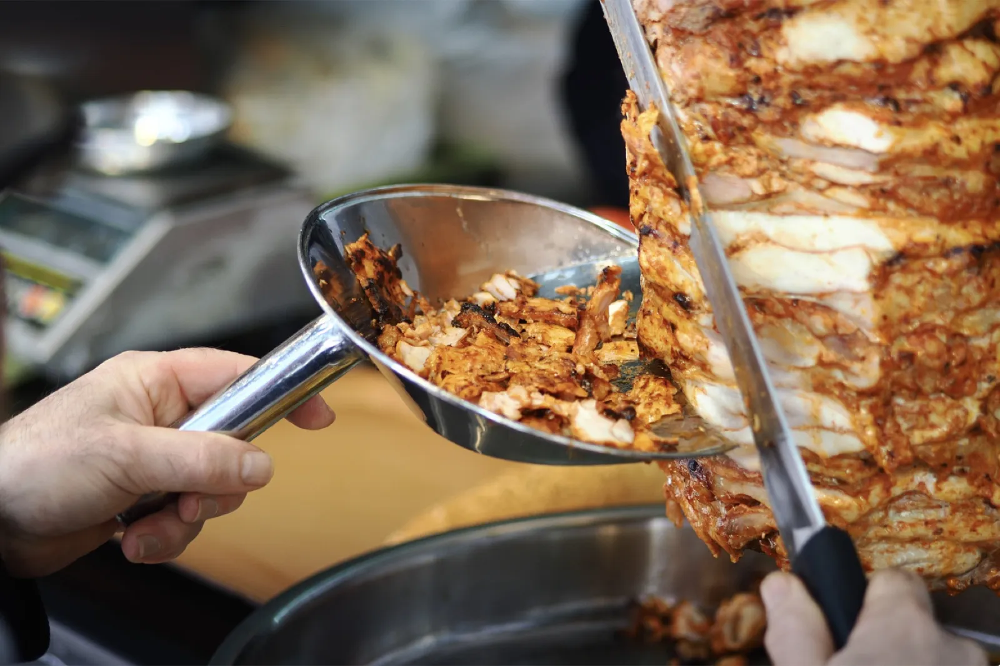
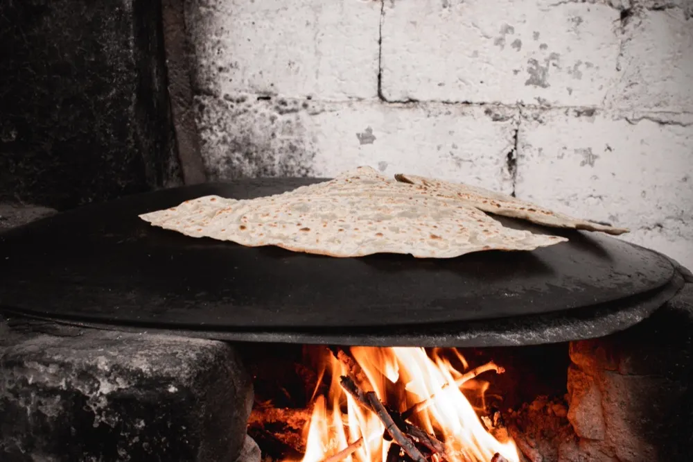
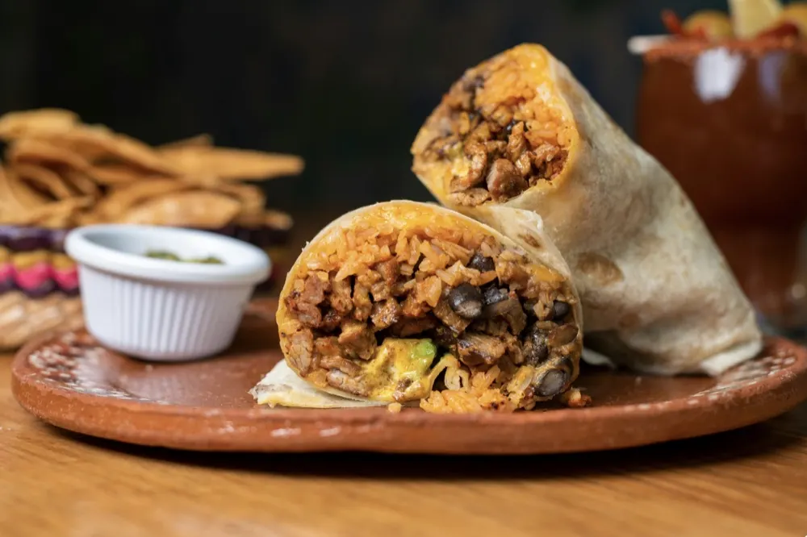
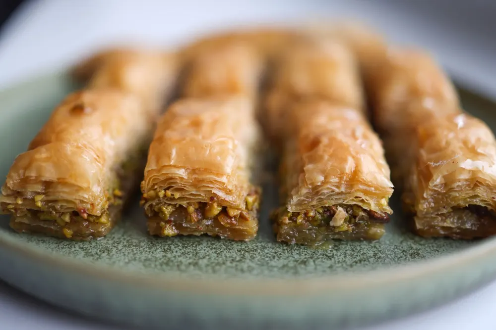
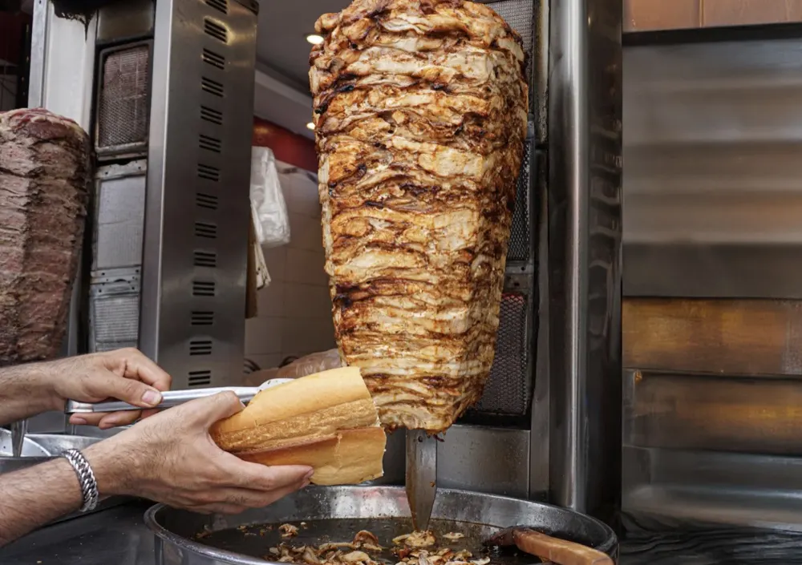

Turkse pizza kalfsdöner
€ 9,50"Volgens mij de beste Turkse pizza döner van heel Brabant"
Bestel onlineDönerzaak achter station Den Bosch

De kaart
Zelfde vers gesneden döner, jij kiest waar hij in komt. Alle prijzen staan gewoon op de kaart.
Toppers
"Volgens mij de beste Turkse pizza döner van heel Brabant"
Bestel onlineFriet, kipdöner van de spies, gesmolten kaas en frisse salade. Ook als XXL.
Bestel onlineDun lavash-brood, goed gevuld met kalfsdöner. Met extra vlees en kaas als je groot uitpakt.
Bestel onlineReviews · 4,3 uit 62 op Google
"Volgens mij de beste Turkse pizza döner van heel Brabant. De portie was enorm en de medewerker ontzettend vriendelijk."
Erg lekker eten en vriendelijke medewerkers. De zaak is schoon, de prijzen zijn goed en er zijn vegetarische opties.
De quesadilla was heerlijk. Ze luisterden goed naar mijn wensen en gaven me rustig de tijd om te kiezen.
Smaak, porties en prijzen zijn goed. Vriendelijk en behulpzaam personeel. Lekker en betaalbaar eten.
Het eten was geweldig en Ali was erg vriendelijk en behulpzaam. Ook fijn dat alles halal is.
Heerlijk eten en snelle service. Vriendelijk personeel en verschillende lekkere vegetarische opties.
Topzaak met heel aardig personeel. Het eten is lekker en de service is goed. Zeker een aanrader.
Ook op de kaart
De spies is de ster, maar de kaart is breed. Ook zonder vlees eet je hier goed.

€ 4,50Turks platbrood met fetakaas, met fetakaas en spinazie, of met aardappel.
Alle drie vegetarisch
vanaf € 6,00Goed gevuld met kipfilet, shoarma of döner. Of met alleen kaas.

vanaf € 4,25Baklava met pistache, tiramisu, cheesecake of red velvet.
Bestellen
De hele kaart online, met dezelfde prijzen als in de zaak.
Jij kiest hoe en hoe laat. Wij gaan meteen aan de slag.
Direct online, of gewoon in de zaak of aan de deur.

Vind ons
Aan de Paleiskwartier-kant van het station. Handig om je bestelling op te halen op weg naar huis.
Zeven dagen per week dezelfde tijden. Wel zo makkelijk te onthouden.
Trek gekregen?
Betaal online, of gewoon bij het afhalen of aan de deur.